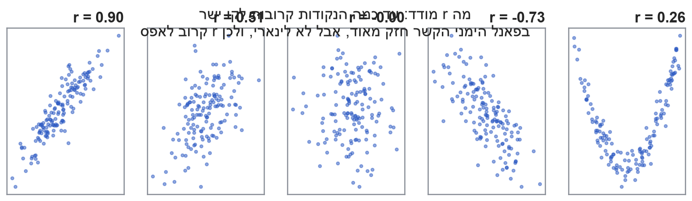
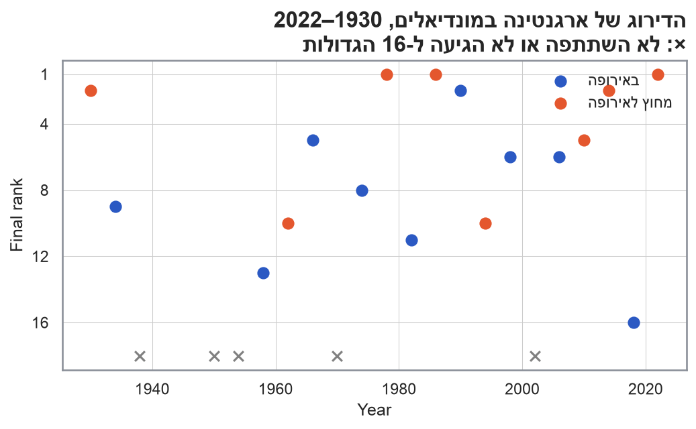

female = gentoo.loc[gentoo.sex =="female", "body_mass"]male = gentoo.loc[gentoo.sex =="male", "body_mass"]res = stats.ttest_ind(female, male, equal_var=False) # Welch's t-test, like R's defaultci = res.confidence_interval(confidence_level=0.95)print(f"t = {res.statistic:.6g}, df = {res.df:.6g}, p-value = {res.pvalue:.6g}")print(f"95% CI for mean(female) - mean(male): [{ci.low:.6g}, {ci.high:.6g}]")print(f"mean female = {female.mean():.6g}, mean male = {male.mean():.6g}")
t = -14.7614, df = 116.644, p-value = 1.86776e-28
95% CI for mean(female) - mean(male): [-913.113, -697.076]
mean female = 4679.74, mean male = 5484.84
איך קוראים את הפלט
t = -14.76: ההפרש בין הממוצעים הוא כ-15 שגיאות תקן. הסימן שלילי כי R מחסר זכרים מנקבות
df = 116.6: Welch לא מניח שוויון שונויות, ולכן דרגות החופש לא שלמות
p-value < 2e-16: אם \(H_0\) נכונה, הסיכוי לראות הפרש קיצוני כזה כמעט אפס. דוחים את \(H_0\)
רווח הסמך (95%): הנקבות קלות מהזכרים ב-697 עד 913 גרם. הערך 0 לא נמצא ברווח
ההנחות: תצפיות בלתי תלויות, והתפלגות נורמלית בכל קבוצה (או מדגם גדול)
להזכיר: p-value איננו ההסתברות ש-H0 נכונה. זו ההסתברות לנתונים קיצוניים כאלה או יותר, בהינתן ש-H0 נכונה.
כאן ההנחות סבירות: ההיסטוגרמות בכל קבוצה נראות פעמוניות, ויש כ-60 פרטים בכל קבוצה. בשאר ההרצאה נשאל מה עושים כשההנחה על ההתפלגות לא מתקיימת, למשל כשיש ערכים קיצוניים או כשהמדגם קטן.
למה צריך שיטות א-פרמטריות? (Non-parametric methods)
הרעיון
שיטות פרמטריות (מבחן t, ANOVA) מניחות התפלגות ידועה של תגובת המערכת, בדרך כלל נורמלית
שיטות א-פרמטריות מסתפקות במידע חלקי על ההתפלגות
הן נשענות פחות על הערכים עצמם ויותר על הסדר שלהם (הדירוג)
אין שיטה אחת לכל דבר: לכל השערה יש מבחן ייעודי
בפועל, נתונים “לא נורמליים” הם הכלל ולא החריג. זמני תגובה של מערכות, הכנסות, זמני המתנה בתור, ציוני שביעות רצון בסולם 1–5 ודירוגים בתחרות הם כולם מוטים, בדידים או מלאים בערכים חריגים. כשהמדגם קטן, משפט הגבול המרכזי לא מספיק כדי להציל אותנו.
כשהתוחלת בכלל לא קיימת
דוגמה:
\[
f(x) = \dfrac{1}{(1+x)^2}, \quad x \in [0, \infty)
\]
# F(x) = 1 - 1/(1+x) => x = 1/(1-u) - 1n =20000u = np.random.default_rng(2026).uniform(size=n)x =1/ (1- u) -1i = np.arange(1, n +1)running_mean = np.cumsum(x) / irunning_median = pd.Series(x).expanding().median().to_numpy()keep = (i %20==0)fig, ax = plt.subplots(figsize=(8, 4.5))ax.axhline(1, linestyle="--", color="grey")ax.plot(i[keep], running_mean[keep], color=nanas_pal["accent"], label="ממוצע מצטבר")ax.plot(i[keep], running_median[keep], color=nanas_pal["primary"], label="חציון מצטבר")ax.set_xscale("log")ax.set_title("החציון מתכנס ל-1, הממוצע ממשיך לטפס\nדגימות מהתפלגות שבה התוחלת אינסופית", loc="right")ax.set_xlabel("Sample size (log scale)")ax.legend()plt.show()
הממוצע “קופץ” בכל פעם שמגיעה תצפית קיצונית, ולעולם לא מתייצב. החציון מתייצב מהר מאוד סביב 1. זו האינטואיציה לכל ההרצאה: סטטיסטיים שמבוססים על סדר ודירוג עמידים לערכים קיצוניים.
כשהנתונים סדורים: שאלת סקר בסולם ליקרט
“באיזו מידה את/ה אוהב/ת סטטיסטיקה?” (150 משיבים)
הסולם סדור (ordinal): הסדר ידוע, המרחקים בין התשובות לא
קידוד 1–5 וחישוב ממוצע מניחים שכל הפערים שווים
הממוצע (np.float64(3.2)) נופל ליד “במידה בינונית”, התשובה שהכי מעט אנשים בחרו
ההתפלגות בדידה, חסומה ורחוקה מנורמלית. מבחנים על החציון ועל דירוגים מתאימים כאן יותר
סולם ליקרט (Likert scale) הוא אחד הכלים הנפוצים ביותר בסקרים, ובנתונים כאלה קל ליפול לחישוב ממוצע. המספרים 1 עד 5 הם רק תוויות שמשמרות סדר. אין סיבה להניח שהמרחק בין “כלל לא” ל”במידה מועטה” שווה למרחק בין “במידה רבה” ל”במידה רבה מאוד”. אם נחליף את הקידוד בכל קידוד אחר ששומר על הסדר (למשל 1, 2, 3, 4, 10), הממוצע ישתנה, ועמו המסקנות של מבחן t. החציון והדירוגים לא ישתנו כלל, ולכן גם המבחנים שמבוססים עליהם.
כאן החציון הוא “במידה רבה”, ובנוסף כדאי פשוט לדווח על ההתפלגות כולה, למשל אחוז המשיבים שענו “במידה רבה” או “במידה רבה מאוד”. הממוצע מסתיר את מה שהגרף מראה בבירור: הקבוצה מקוטבת, ומעט מאוד משיבים נמצאים באמצע.
כדאי לדעת שבפועל רבים מריצים מבחני t על נתוני ליקרט, ובמדגמים גדולים זה לרוב לא מטעה מאוד. אבל זו הנחה שצריך להצדיק, לא ברירת מחדל.
כלל ההכרעה: אם \(r_0 \le R^*_\alpha\), דוחים את \(H_0\).
קוד
# Critical value of the sign test: largest r with 2 * P(Bin(n, 0.5) <= r) <= alphadef sign_critical(n, alpha): r = np.arange(0, n +1) ok =2* stats.binom.cdf(r, n, 0.5) <= alphareturnint(r[ok].max()){f"{a:.2f}": sign_critical(20, a) for a in (0.01, 0.05, 0.10)}
{'0.01': 3, '0.05': 5, '0.10': 5}
בבחינה הערך הקריטי נתון בטבלה. ב-R מחשבים אותו בשורה אחת, או מוותרים עליו ומסתכלים ישר על ה-p-value.
דוגמה: זמני תגובה של API
ה-SLA של שירות קובע שהחציון של זמן התגובה הוא 200 ms. נדגמו 20 בקשות:
איך קוראים את הפלט:number of successes = 15 הוא \(r^+\), ו-p-value = 0.04139 הוא \(2 \cdot P(r^+ \le 5)\). המסקנה תלויה ברמת המובהקות שנקבעה מראש: ב-1% אין מספיק ראיות, וב-5% יש.
דוגמה: חציון הציונים במועד ב׳
מרצה טוען שחציון הציונים במועד ב׳ שלו הוא 80. ניגשו 11 סטודנטים. האם הטענה נכונה ב-\(\alpha = 0.1\)?
קוד
grades = pd.read_csv(f"{data_dir}/exam_grades.csv")print(grades.grade.to_list())stats.binomtest(int((grades.grade >80).sum()), n=len(grades)).pvalue # sign test
[79, 75, 85, 95, 70, 60, 65, 75, 74, 89, 72]
np.float64(0.2265625)
\(r^+ = 3\), \(r_0 = 3 > R^*_{0.1,11} = 2\), ולכן טענת המרצה אינה נדחית
גם מבחן t לתוחלת (בהנחת נורמליות) לא דוחה את \(H_0\)
קוד
res = stats.ttest_1samp(grades.grade, popmean=80)ci = res.confidence_interval(confidence_level=0.95)print(f"t = {res.statistic:.6g}, df = {res.df:.6g}, p-value = {res.pvalue:.6g}")print(f"95% CI for mean: [{ci.low:.6g}, {ci.high:.6g}], mean = {grades.grade.mean():.6g}")
t = -1.20401, df = 10, p-value = 0.256311
95% CI for mean: [69.375, 83.1704], mean = 76.2727
מבחן הסימן למדגמים מזווגים
כשהתצפיות מזווגות, מריצים את מבחן הסימן על ההפרשים \(d_i = x_i - y_i\), עם \(H_0: \tilde{\mu}_d = 0\).
דוגמה: צוות מוצר שוקל להחליף את Sonnet 5.5 ב-Opus 5.5, היקר יותר, למשימות תיוג. שני המודלים תייגו את אותן 11 משימות. האם Opus טועה פחות? בטבלה: שיעור השגיאות (%) בכל משימה. \(d_i\) = Opus פחות Sonnet. (נתונים מדומים)
למה מזווג? יש משימות קשות לכל מודל (סרקזם, תעדוף רפואי) ויש קלות (זיהוי שפה, ספאם). ההבדל בין המשימות גדול בהרבה מההבדל בין המודלים, ולכן משווים את שני המודלים בתוך כל משימה.
Sonnet מול Opus: התוצאה
קוד
n_plus =int((llm_err.opus > llm_err.sonnet).sum())res = stats.binomtest(n_plus, n=len(llm_err))ci = res.proportion_ci(confidence_level=0.95)print(f"number of successes = {n_plus}, n = {len(llm_err)}, p-value = {res.pvalue:.6g}")print(f"95% CI for proportion: [{ci.low:.6g}, {ci.high:.6g}]")
number of successes = 2, n = 11, p-value = 0.0654297
95% CI for proportion: [0.0228312, 0.517756]
\(r^+ = 2\), ו-\(p = 0.065 < 0.1\), ולכן דוחים\(H_0\): חציון ההפרשים אינו 0
Opus טועה פחות ב-9 מתוך 11 המשימות
מבחן הדירוגים המסומנים (Wilcoxon signed-rank test)
הרחבה של מבחן הסימן
\[
H_0: \tilde{\mu} = z \qquad H_1: \tilde{\mu} \neq z
\]
הנחה: ההתפלגות רציפה וסימטרית סביב החציון \(\tilde{\mu}\). לכן ההשערות הן על מרכז הסימטריה, שהוא החציון (וגם התוחלת, אם היא קיימת)
מתבסס לא רק על הסימן של ההפרשים אלא גם על גודלם
לרוב חזק יותר ממבחן הסימן
אפשר להפעיל גם על הפרשים של מדגמים מזווגים
שלבי המבחן
משמיטים הפרשים ששווים ל-\(0\) ומעדכנים את \(n\). מדרגים את \(|x_i - z|\) בסדר עולה. במקרה של שוויון, כל אחד מקבל את ממוצע הדרגות
מצמידים לכל דרגה את הסימן של ההפרש שלה
\(R^+\) הוא סכום הדרגות החיוביות ו-\(R^-\) סכום הדרגות השליליות, וסטטיסטי המבחן הוא \(R = \min(R^+, R^-)\)
דוחים את \(H_0\) אם \(R \le R^*_{\alpha,n}\) (טבלה), או לפי קירוב נורמלי:
תחת \(H_0\) ההתפלגות סימטרית סביב \(z\), ולכן לכל הפרש יש סיכוי \(\frac{1}{2}\) להיות חיובי, בלי קשר לגודלו. אפשר לחשוב על זה כך: הדרגות \(1, 2, \dots, n\) קבועות, ולכל דרגה מטילים מטבע הוגן שקובע את הסימן שלה.
\[
R^+ = \sum_{k=1}^{n} k \cdot I_k, \qquad I_k \sim \text{Bernoulli}\left(\tfrac{1}{2}\right) \text{ בלתי תלויים}
\]
תוחלת: סכום כל הדרגות הוא \(\frac{n(n+1)}{2}\), ובממוצע חצי ממנו נופל בצד החיובי:
שימו לב להבדל ממבחן סכום הדירוגים שנראה בהמשך. שם הדרגות של המדגם הקטן תלויות זו בזו (שתי תצפיות לא יכולות לקבל אותה דרגה), ולכן נדרש תיקון עם שונות משותפת. כאן הדרגות עצמן קבועות, ורק הסימנים אקראיים ובלתי תלויים, כך שהשונות היא פשוט סכום השונויות. הדרגות הגבוהות תורמות לשונות הרבה יותר מהנמוכות (\(k^2\)), וזה הגיוני: הסימן של ההפרש הגדול ביותר מזיז את \(R^+\) ב-\(n\), והסימן של הקטן ביותר רק ב-\(1\).
אפשר לוודא את הנוסחאות ב-R: עם \(n = 5\) יש \(2^5 = 32\) צירופי סימנים, וכולם סבירים באותה מידה תחת \(H_0\).
קוד
import itertoolsn =5signs = np.array(list(itertools.product([0, 1], repeat=n))) # every sign pattern under H0R_plus_all = signs @ np.arange(1, n +1){"E_exact": R_plus_all.mean(), "E_formula": n * (n +1) /4,"V_exact": R_plus_all.var(), "V_formula": n * (n +1) * (2* n +1) /24}
ב-\(\alpha = 0.1\) מבחן הסימן דוחה ומבחן הדירוגים המסומנים לא
אם אפשר להניח סימטריה, שני המבחנים תקפים. מבחן הדירוגים המסומנים מנצל גם את גודל ההפרשים, ולכן בדרך כלל חזק יותר
אם אי אפשר להניח סימטריה, רק מבחן הסימן בודק את החציון, והוא שקובע
למה הסימטריה כל כך חשובה? ההתפלגות של \(R^+\) תחת \(H_0\) מניחה שלכל דרגה יש סיכוי \(\frac{1}{2}\) להיות חיובית, בלי קשר לגודלה. בהתפלגות לא סימטרית זה לא נכון: גם כשהחציון הוא \(z\), ההפרשים הגדולים נוטים ליפול בצד אחד. אז המבחן כבר לא בודק את החציון, ושיעור הטעות מסוג I לא נשמר. מבחן הסימן סופר רק סימנים, ולכן הוא תקף לחציון בכל התפלגות רציפה. ומה לגבי זנבות כבדים? ערך קיצוני אחד מקבל במבחן הדירוגים המסומנים את הדרגה הגבוהה ביותר, ובמבחן הסימן הוא עוד תצפית אחת. לכן כשיש הרבה ערכים קיצוניים, מבחן הסימן יכול להיות חזק יותר גם תחת סימטריה.
כדאי לשים לב ממה נובע הפער. Opus מנצח ב-9 משימות, אבל בהפרשים קטנים (0.2 עד 3.1 נקודות אחוז). בשתי המשימות שבהן Sonnet עדיף, זיהוי תוכן פוגעני וזיהוי סרקזם, הפערים גדולים: 5.9 ו-6.8 נקודות אחוז. ההפרשים רחוקים מסימטריה, ולכן כאן מבחן הסימן הוא המתאים. ובכל זאת, למוצר יש מסקנה מעשית: לפני שמחליפים מודל, בודקים איפה הוא נכשל, ולא רק כמה פעמים הוא ניצח. ממוצע ההפרשים כאן הוא 0.1 בלבד, ומבחן t מזווג לא היה מוצא שום הבדל. מבחן הסימן סופר רק כמה פעמים כל שיטה ניצחה, ומבחן הדירוגים המסומנים מתחשב גם בגודל הניצחון. השאלה איזה מבחן לבחור היא שאלה על ההנחות, ולא על איזה מבחן נותן את התשובה שרצינו. ואת ההחלטה מקבלים לפני שמסתכלים על התוצאה.
מבחן סכום הדירוגים (Wilcoxon rank-sum test)
שתי אוכלוסיות בלתי תלויות
\(n\) תצפיות מאוכלוסייה א׳ ו-\(m\) תצפיות מאוכלוסייה ב׳, עם \(m \le n\) ו-\(N = n + m\)
\(H_0: F_1(x) = F_2(x)\) מול \(H_1: F_1(x) \neq F_2(x)\)
השיטה (Wilcoxon rank-sum): מאחדים את כל התצפיות לרשימה אחת וממיינים
סטטיסטי המבחן\(T\): סכום הדרגות של התצפיות מהמדגם הקטן
דוחים את \(H_0\) אם \(\left|\frac{T - E(T)}{\sigma_T}\right| > Z_{1-\alpha/2}\)
למה ההשערה היא על כל ההתפלגות ולא על החציון? החישוב של \(E(T)\) ושל \(V(T)\) בשקפים הבאים נשען על טיעון אחד: תחת \(H_0\) כל סידור של \(N\) התצפיות סביר באותה מידה. זה נכון רק אם שני המדגמים מגיעים מאותה התפלגות. חציונים שווים לא מספיקים. אם לשתי האוכלוסיות אותו חציון אבל אחת מפוזרת יותר, התצפיות שלה יתרכזו בשני הקצוות של הרשימה המאוחדת, והסידורים כבר לא שווי הסתברות.
מה המבחן בעצם מזהה? \(T\) מגיב להסתברות \(P(X > Y)\) שתצפית מקרית מאוכלוסייה א׳ גדולה מתצפית מקרית מאוכלוסייה ב׳. תחת \(H_0\) ההסתברות הזו היא \(\frac{1}{2}\). לכן הניסוח \(H_1: F_1 \neq F_2\) מבטיח יותר מדי: אם ההתפלגויות שונות רק בפיזור, \(P(X > Y)\) נשארת \(\frac{1}{2}\), ולמבחן כמעט אין עוצמה לזהות את ההבדל.
הנחת הזזה (location shift): אם שתי ההתפלגויות זהות בצורתן ואחת מוזזת ביחס לשנייה, \(F_1(x) = F_2(x - \Delta)\), אז \(F_1 = F_2\) אם ורק אם \(\Delta = 0\). ו-\(\Delta\) הוא בדיוק הפרש החציונים (וגם הפרש התוחלות, אם הן קיימות). רק תחת ההנחה הזו מבחן סכום הדירוגים הוא מבחן על חציונים:
זו בדיוק ההנחה בדוגמת תהליך הייצור בהמשך: השיפור “לא שינה את צורת ההתפלגות, אבל הזיז אותה”. המשפט הנפוץ “Mann–Whitney בודק חציונים” נכון רק כשההנחה הזו מתקיימת.
מאיפה מגיעה \(E(T)\)?
נניח שאין תיקו. נסמן ב-\(R_1, \dots, R_m\) את הדרגות של תצפיות המדגם הקטן, כך ש-\(T = \sum_{i=1}^{m} R_i\).
תחת \(H_0\) כל התצפיות מגיעות מאותה התפלגות, ולכן כל סידור של \(N\) התצפיות סביר באותה מידה. מכאן שכל דרגה \(R_i\) מתפלגת אחיד על \(\{1, 2, \dots, N\}\):
\[
E(R_i) = \frac{1}{N}\sum_{k=1}^{N} k = \frac{N+1}{2}
\]
השונות המשותפת שלילית: אם תצפית אחת קיבלה דרגה גבוהה, נשארו פחות דרגות גבוהות לאחרות. זו בדיוק הסיבה ש-\(V(T)\) קטנה מ-\(m\sigma^2\), השונות שהייתה מתקבלת אילו הדרגות היו בלתי תלויות. הגורם \(\frac{N-m}{N-1}\) הוא תיקון האוכלוסייה הסופית (finite population correction) המוכר מדגימה בלי החזרה.
אפשר לוודא את הנוסחאות ב-R: עם \(n = 5\) ו-\(m = 4\) עוברים על כל \(\binom{9}{4} = 126\) הדרכים לבחור את הדרגות של המדגם הקטן, וכולן סבירות באותה מידה תחת \(H_0\).
קוד
import itertoolsn, m =5, 4N = n + mT_all = np.array([sum(c) for c in itertools.combinations(range(1, N +1), m)]) # every possible T under H0{"E_exact": T_all.mean(), "E_formula": m * (N +1) /2,"V_exact": T_all.var(), "V_formula": m * n * (N +1) /12}
\(m\) הוא מספר הפרמטרים שאמדנו מהנתונים. זה מבחן א-פרמטרי: ההתפלגות של הסטטיסטי תחת \(H_0\) לא תלויה בהתפלגות של האוכלוסייה, ואותו מבחן עובד לכל \(F_0\). אבל ההתפלגות \(\chi^2\) היא רק קירוב למדגם גדול, שנשען על קירוב נורמלי לספירות. לכן צריך \(E_i \ge 5\) בכל קטגוריה. ב-KS, לעומת זאת, ההתפלגות של \(D\) תחת \(H_0\) מדויקת וזהה לכל\(F_0\) רציפה.
דוגמה: האם משקל הגוף של כל 342 הפינגווינים ב-Palmer Penguins (שלושת המינים יחד) מתפלג נורמלית? מחלקים ל-8 קטגוריות ששוות בהסתברותן תחת הנורמלית המותאמת, כך ש-\(E_i = 342/8 = 42.75\). אמדנו \(\mu\) ו-\(\sigma\), ולכן \(m = 2\).
\(\chi^2 = 33.86 > 11.07 = \chi^2_{0.95,\,5}\), ולכן דוחים\(H_0\): המשקל אינו נורמלי. זה תערובת של שלושה מינים.
החישוב הידני:
קטגוריה
1
2
3
4
5
6
7
8
\(O_i\)
34
70
50
39
30
29
35
55
\(\frac{(O_i - E_i)^2}{E_i}\)
1.79
17.37
1.23
0.33
3.80
4.42
1.40
3.51
רוב הסטטיסטי מגיע מקטגוריה 2 (משקלים של 3,280 עד 3,660 גרם): יש שם הרבה יותר פינגווינים מהצפוי. אלה פינגווינים מסוג Adelie ו-Chinstrap. גם בקטגוריה העליונה יש עודף, של Gentoo הכבדים.
זהירות בקריאת הפלט: אם מדפיסים את chisq.test(observed) כולו, R מדווח df = 7. הוא לא יודע שאמדנו שני פרמטרים מהנתונים. את ה-p-value הנכון מחשבים בעצמנו: pchisq(33.86, df = 5, lower.tail = FALSE).
למה מורידים דרגות חופש? כל פרמטר שאומדים “מקרב” את ההתפלגות לנתונים ומקטין את \(\chi^2\). כדי לפצות, מורידים דרגת חופש אחת לכל פרמטר.
מבחן Kolmogorov–Smirnov
כשהנתונים רציפים, החלוקה לקטגוריות מאבדת מידע. מבחן KS משווה את פונקציית ההתפלגות המצטברת:
\(F_n(x)\): פונקציית ההתפלגות האמפירית, החלק מהתצפיות שקטנות או שוות ל-\(x\)
\(H_0: F(x) = F_0(x)\) לכל \(x\), כש-\(F_0\) רציפה ונתונה במלואה
\[
D = \max_x \left| F_n(x) - F_0(x) \right|
\]
דוחים את \(H_0\) אם \(D > D_{\alpha,n}\) (טבלה). למדגם גדול: \(D_{0.05,n} \approx 1.36/\sqrt{n}\)
בחישוב ידני: ממיינים את התצפיות, ובודקים בכל \(x_{(i)}\) את שני הצדדים של המדרגה:
נחזור למשקלי הפינגווינים, הפעם בלי לחלק לקטגוריות:
קוד
res = stats.kstest(mass, stats.norm(loc=mass.mean(), scale=mass.std(ddof=1)).cdf)print(f"D = {res.statistic:.6g}, p-value = {res.pvalue:.6g}")
D = 0.104084, p-value = 0.00111412
\(D = 0.104 > 0.074 \approx 1.36/\sqrt{342}\), ולכן דוחים\(H_0\), בהתאם למבחן חי-בריבוע
המרחק הגדול ביותר הוא סביב 3,800 גרם: 41% מהפינגווינים קלים מזה, ולפי הנורמלית היו צריכים להיות רק 31%
שתי הסתייגויות. (1) ה-p-value של KS נכון רק כש-\(F_0\) נקבעה לפני שראינו את הנתונים. כאן אמדנו את \(\mu\) ו-\(\sigma\) מאותם נתונים, ולכן הנורמלית “מותאמת” אליהם, \(D\) יוצא קטן מדי, והמבחן שמרני: ה-p-value גדול מדי. כאן הוא דוחה בכל זאת, ולכן הדחייה רק מתחזקת. לבדיקת נורמליות עם פרמטרים אמודים יש מבחנים ייעודיים, למשל Lilliefors או Shapiro–Wilk (shapiro.test). (2) המשקל נמדד בקפיצות של 25 גרם, ולכן יש ערכים זהים, ו-R מזהיר על כך (ties). KS מניח התפלגות רציפה, אבל עם 342 תצפיות ההשפעה כאן קטנה.
דוגמה: גרסה חדשה של שירות inference עלתה לאוויר. החציון של זמן התגובה כמעט לא השתנה, אבל משתמשים מתלוננים על “קפיצות”. נדגמו 60 בקשות מכל גרסה. (נתונים מדומים)
סכום הדירוגים שואל אם תצפית מגרסה אחת נוטה להיות גדולה מתצפית מהגרסה השנייה. ב-v2 יש גם זמנים קצרים מאוד וגם ארוכים מאוד: הדרגות שלו מתפזרות לשני הקצוות, מתקזזות, וסכום הדרגות נשאר קרוב לתוחלת שלו
KS רגיש לכל הבדל בין ההתפלגויות: מיקום, פיזור או צורה. כאן הוא דוחה ב-\(\alpha = 0.05\)
בשירות אמיתי, הזנב (האחוזון ה-95 או ה-99) הוא מה שהמשתמשים מרגישים. לכן כדאי לבדוק יותר מהחציון
לפני שמראים את הבולט הראשון, אפשר לשאול את הכיתה: למה סכום הדירוגים “עיוור” כאן?
כדי לראות את זה במספרים, נדרג את כל 120 התצפיות יחד ונבדוק איפה נופלות הדרגות של כל גרסה:
קוד
latency["rank"] = stats.rankdata(latency.ms)latency.groupby("version")["rank"].agg( mean_rank="mean", # under H0: (N + 1) / 2 = 60.5 bottom_25pc=lambda r: (r <=30).mean(), # share of the version's obs in the lowest quarter top_25pc=lambda r: (r >90).mean(), # ... and in the highest quarter)(v2[:, None] > v1[None, :]).mean() # estimated P(v2 > v1)
np.float64(0.5244444444444445)
ממוצע הדרגות של שתי הגרסאות קרוב ל-60.5, הערך הצפוי תחת \(H_0\). אבל הדרך שבה הן מגיעות לשם שונה לגמרי. הדרגות של v1 מרוכזות באמצע: רק 13% מהתצפיות שלו נמצאות ברבע התחתון של הרשימה המאוחדת, ו-13% ברבע העליון. ב-v2 זה 37% בכל אחד מהקצוות, והקצוות מתקזזים. גם ההסתברות שזמן תגובה מ-v2 יהיה ארוך מזמן תגובה מ-v1 היא 0.497, כמעט בדיוק \(\frac{1}{2}\). כפי שראינו, זה בדיוק מה שמבחן סכום הדירוגים בודק, ולכן אין לו במה להיאחז. מבחן KS לא מסכם את הדרגות למספר אחד. הוא משווה את שתי פונקציות ההתפלגות המצטברות בכל נקודה, ולכן הוא רואה את ההבדל בפיזור.
חי-בריבוע להומוגניות (Chi-square test of homogeneity)
גם חי-בריבוע יודע להשוות שתי התפלגויות (או יותר). מחלקים את שני המדגמים לאותן \(k\) קטגוריות ובונים טבלה של \(2 \times k\):
בכל קטגוריה 24 בקשות, ולכן \(E_{ij} = 12\) בכל תא. ל-v2 יש עודף בשתי הקטגוריות הקיצוניות: זה הפיזור הגדול
\(\chi^2 = 31.3 > 9.49 = \chi^2_{0.95,\,4}\), ולכן דוחים\(H_0\), כמו ב-KS
החישוב הידני. בכל עמודה יש 24 תצפיות, ו-60 מתוך 120 בכל גרסה, ולכן \(E_{ij} = \frac{60 \cdot 24}{120} = 12\). התרומות של שורת v1 הן \(\frac{(4-12)^2}{12} = 5.33\), \(\frac{(17-12)^2}{12} = 2.08\) (שלוש פעמים) ו-\(\frac{(5-12)^2}{12} = 4.08\). לשורת v2 התרומות זהות, כי בטבלה של שתי שורות הסטיות שוות בגודלן והפוכות בסימנן. סך הכול \(\chi^2 = 2 \cdot (5.33 + 3 \cdot 2.08 + 4.08) = 31.33\) עם \((2-1)(5-1) = 4\) דרגות חופש.
מתי לבחור במה? חי-בריבוע מתאים גם לנתונים קטגוריים (למשל סוג התקלה, או הדירוג שמשתמש נתן לתשובה), שעליהם אי אפשר להפעיל KS. כשהנתונים רציפים, החלוקה לקטגוריות מאבדת מידע, והתוצאה תלויה בבחירת הגבולות. KS משתמש בנתונים כמו שהם. חישוב הסטטיסטי זהה לזה של מבחן חי-בריבוע לאי-תלות בין שני משתנים קטגוריים. ההבדל הוא באופן הדגימה: במבחן ההומוגניות קבענו מראש כמה תצפיות ניקח מכל אוכלוסייה.
חי-בריבוע מול KS
שני המבחנים א-פרמטריים: ההתפלגות של הסטטיסטי תחת \(H_0\) לא תלויה בהתפלגות של האוכלוסייה. ההבדל ביניהם הוא בסוג הנתונים ובמחיר:
חי-בריבוע
KS
נתונים
מחולקים לקטגוריות. מתאים גם לנתונים קטגוריים ובדידים
רציפים. משתמש בפונקציה האמפירית עצמה
מחיר
החלוקה לקטגוריות מאבדת מידע, והתוצאה תלויה בגבולות
\(-1 \le r \le 1\). הסימן הוא כיוון הקשר, והגודל הוא עד כמה הנקודות קרובות לקו ישר
\(r = 0\) פירושו “אין קשר לינארי”, לא “אין קשר”. ומתאם אינו סיבתיות
למה זה חשוב: זו הדרך המהירה ביותר לכמת קשר בין שני משתנים, והיא הבסיס לרגרסיה (ברגרסיה פשוטה, \(R^2 = r^2\))
שימוש יומיומי:
האם ציון אוטומטי של מודל שפה (LLM-as-judge) מסכים עם הציונים של בודקים אנושיים?
האם זמן הטעינה של אתר קשור לשיעור הנטישה?
מטריצת מתאמים כצעד ראשון בכל ניתוח: אילו משתנים “זזים יחד”?
כדי לפתח אינטואיציה לגודל של \(r\), הנה כמה ענני נקודות עם מתאמים שונים. שימו לב לפאנל האחרון: הקשר בין \(x\) ל-\(y\) חזק מאוד, אבל הוא לא לינארי (וגם לא מונוטוני), ולכן \(r\) קרוב לאפס.
קוד
rng3 = np.random.default_rng(2026)rhos = [0.9, 0.5, 0, -0.7]panels = []for rho in rhos: x = rng3.standard_normal(150) y = rho * x + np.sqrt(1- rho**2) * rng3.standard_normal(150) panels.append((x, y))x5 = rng3.uniform(-2, 2, 150)y5 = x5**2+ rng3.normal(0, 0.3, 150)panels.append((x5, y5))fig, axes = plt.subplots(1, 5, figsize=(13, 3.2))for ax, (x, y) inzip(axes, panels): r = np.corrcoef(x, y)[0, 1] ax.scatter(x, y, alpha=0.5, s=10, color=nanas_pal["primary"]) ax.set_title(f"r = {r:.2f}") ax.set_xticks([]); ax.set_yticks([])fig.suptitle("מה r מודד: עד כמה הנקודות קרובות לקו ישר\nבפאנל הימני הקשר חזק מאוד, אבל לא לינארי, ולכן r קרוב לאפס")plt.show()

למה לא פירסון?
כפי שראינו, פירסון מודד את חוזק הקשר הלינארי, אבל:
הוא רגיש מאוד לערכים חריגים
הוא לא מתאים למשתנים אורדינליים (סולמות סדר, כמו “מרוצה מאוד” עד “לא מרוצה”)
הוא לא מתאים כשהשונות לא אחידה
החלופה: מדדים שמבוססים על הדרגות, ולכן מודדים קשר מונוטוני, לא בהכרח לינארי.
Spearman’s ρ: מתאם פירסון על הדרגות
Kendall’s τ: מבוסס על זוגות בהתאמה מול זוגות בחוסר התאמה
Kendall’s τ
זוג תצפיות \((x_i, y_i), (x_j, y_j)\) הוא בהתאמה (concordant) אם \(x_i > x_j\) וגם \(y_i > y_j\), או \(x_i < x_j\) וגם \(y_i < y_j\). אחרת הזוג בחוסר התאמה (discordant).
אם השופט והבודק מדרגים בדיוק באותו סדר, כל \(d_i = 0\) ו-\(\rho_S = 1\)
מאיפה הנוסחה? ספירמן הוא פשוט מתאם פירסון בין הדרגות\(R_X\) ו-\(R_Y\). כשאין שוויונות, הדרגות הן תמיד \(1, \dots, n\), ולכן הממוצע והשונות שלהן ידועים מראש. אחרי פישוט, כל מה שנשאר לחשב הוא \(\sum d_i^2\). כשיש שוויונות הפישוט לא תקף, ומחשבים ישירות את פירסון על הדרגות הממוצעות.
דוגמה: קנדל ביד
אותן שש תשובות. עוברים על כל \(\binom{6}{2} = 15\) הזוגות. בכל זוג בודקים: האם השופט מסכים עם הבודק איזו מהשתיים טובה יותר?
B
C
D
E
F
\(+\)
\(-\)
A
\(-\)
\(+\)
\(+\)
\(+\)
\(+\)
4
1
B
\(+\)
\(+\)
\(+\)
\(+\)
4
0
C
\(-\)
\(+\)
\(+\)
2
1
D
\(+\)
\(+\)
2
0
E
\(-\)
0
1
סה״כ
12
3
למשל, A מול B: הבודק העדיף את B, אבל השופט העדיף את A. הם לא מסכימים, ולכן הזוג בחוסר התאמה:
פרשנות: \(\frac{1 + \tau}{2} = 0.8\), כלומר השופט והבודק מסכימים על הסדר ב-80% מהזוגות
טריק לספירה מהירה: אם ממיינים את התשובות לפי \(X\) (כמו בטבלה של ספירמן), זוג הוא בהתאמה בדיוק כשגם \(R_Y\) עולה. אז מספיק לעבור על כל שורה ולספור כמה מהשורות שמתחתיה בעלות \(R_Y\) גדול יותר (\(+\)) או קטן יותר (\(-\)). שלושת הזוגות בחוסר התאמה הם שלוש “החלפות” של תשובות שכנות (A–B, C–D, E–F).
תצפית חריגה אחת (למשל שגיאת הקלדה) מספיקה כדי לגרור את פירסון כמעט לאפס. ספירמן וקנדל כמעט לא מושפעים ממנה. לקנדל יש גם פרשנות ישירה: \(\frac{1+\tau}{2}\) הוא ההסתברות שזוג אקראי של תצפיות יהיה בהתאמה.
דוגמה: סטטיסטיקה מול ספרות
אותם 150 משיבים מסקר הליקרט נשאלו גם “באיזו מידה את/ה אוהב/ת ספרות?”. האם מי שאוהב סטטיסטיקה נוטה לאהוב ספרות פחות?
בנתונים כאלה תרשים פיזור רגיל לא עוזר: יש רק 25 צירופים אפשריים, ורוב הנקודות נופלות זו על זו. לכן מציגים טבלת שכיחויות כמפת חום.
סטטיסטיקה מול ספרות: המבחן ב-R
\[
H_0: \tau = 0 \qquad H_1: \tau \neq 0
\]
קוד
res = stats.kendalltau(survey.stats, survey.literature) # ties present -> normal approximation, like R's exact=FALSEprint(f"tau = {res.statistic:.6g}, p-value = {res.pvalue:.6g}")
tau = -0.41022, p-value = 5.796e-10
tau שלילי: בזוג אקראי של משיבים, מי שאוהב סטטיסטיקה יותר נוטה לאהוב ספרות פחות
p-value קטן מאוד, ולכן דוחים\(H_0\): יש קשר מונוטוני שלילי
exact = FALSE: יש הרבה מאוד שוויונות (רק 5 ערכים לכל משתנה), ולכן R משתמש בקירוב הנורמלי עם תיקון לתיקו (tau-b)
למה לא פירסון? פירסון מתייחס לקודים 1 עד 5 כאל מספרים עם מרחקים שווים, ואת זה אנחנו לא יודעים בסולם סדור. ספירמן וקנדל משתמשים רק בסדר. במקרה הזה שלושת המדדים קרובים, אבל רק המדדים על הדרגות מוצדקים מראש:
שימו לב ש-\(|\tau|\) קטן מ-\(|\rho_S|\). זה טיפוסי, ולא אומר שהקשר “חלש יותר”. שני המדדים פשוט נמדדים בסקאלה אחרת. ועוד הערה: מדובר בקשר, לא בסיבתיות. אהבה לסטטיסטיקה לא “מורידה” אהבה לספרות. סביר יותר שמשתנה שלישי, כמו תחום הלימודים, קשור לשניהם.
סיכום
מה לקחת מההרצאה
השאלה
פרמטרי
א-פרמטרי
ב-R
מרכז ההתפלגות
t / Z
סימן, דירוגים מסומנים
binom.test, wilcox.test
מזווג
t מזווג
אותו מבחן על ההפרשים
wilcox.test(paired = TRUE)
שני מדגמים ב״ת
t לשני מדגמים
סכום הדירוגים
wilcox.test(x, y)
התאמה להתפלגות
חי-בריבוע, KS
chisq.test, ks.test
שתי התפלגויות
חי-בריבוע להומוגניות, KS לשני מדגמים
chisq.test(table(g, x)), ks.test(x, y)
מתאם
Pearson
Spearman, Kendall
cor(method = )
שיטות א-פרמטריות לא “חינמיות”: כשההנחות הפרמטריות כן מתקיימות, הן חלשות יותר
גם להן יש הנחות (רציפות, סימטריה, אותה צורת התפלגות). צריך לבדוק אותן
שאלת סיכום: ארגנטינה במונדיאל
הנתונים
קוד
arg = pd.read_csv(f"{data_dir}/argentina_world_cup.csv")fig, ax = plt.subplots(figsize=(8, 4))for host, color, label in [(True, nanas_pal["primary"], "באירופה"), (False, nanas_pal["accent"], "מחוץ לאירופה")]: sub = arg[(arg.host_in_europe == host) & arg["rank"].notna()] ax.scatter(sub.year, sub["rank"], s=60, color=color, label=label)missing = arg[arg["rank"].isna()]ax.scatter(missing.year, [18] *len(missing), marker="x", s=50, color="grey")ax.invert_yaxis()ax.set_yticks([1, 4, 8, 12, 16])ax.set_title("הדירוג של ארגנטינה במונדיאלים, 1930–2022\n×: לא השתתפה או לא הגיעה ל-16 הגדולות", loc="right")ax.set_xlabel("Year"); ax.set_ylabel("Final rank")ax.legend()plt.show()

השאלות
א. תנו לפחות שתי סיבות לכך שאי אפשר להניח שהדירוג של ארגנטינה מתפלג נורמלית.
ב. על סמך המונדיאלים עד 2018: האם אפשר לקבוע ב-\(\alpha = 0.05\) שבמחצית מהמונדיאלים העתידיים ארגנטינה תעבור את רבע הגמר (כלומר תגיע לדירוג 1–4)?
ג. מה ההסתברות לטעות מסוג ראשון במבחן שביצעתם בסעיף ב׳?
ד. האם ארגנטינה מצליחה יותר במונדיאלים שנערכים מחוץ לאירופה? (\(\alpha = 0.05\))
ה. עדכון: הוסיפו את מונדיאל 2022 (קטאר, ארגנטינה זכתה). האם המסקנה בסעיף ב׳ משתנה? מה זה מלמד אתכם?
ו. ביקורת: איך טיפלנו בשנים המסומנות ב-×? האם זה הוגן?
פתרון (סעיפים א–ג)
א. הדירוג בדיד ולא רציף. התומך שלו חסום (1 עד 16 ומעלה), בניגוד לנורמלית שהתומך שלה כל הישר. וההתפלגות לא סימטרית.
ב.\(H_0: \tilde\mu = 4.5\) (החציון מפריד בין דירוג 4 לשאר). אי אפשר להניח סימטריה, ולכן משתמשים במבחן הסימן.
ד.\(p \approx 0.48\): לא דוחים. אין ראיה לכך שארגנטינה מצליחה יותר מחוץ לאירופה
ה. עם 2022: \(r_0 = 6 > 5 = R^*_{0.05,22}\) ו-\(p = 0.052\), ולכן כבר לא דוחים. טורניר אחד הפך את המסקנה. במדגם קטן, תוצאה שנמצאת על סף המובהקות היא שבירה
ו. 1938, 1950 ו-1954 הן שנים שבהן ארגנטינה לא השתתפה בכלל. אם מתייחסים אליהן כאל “דירוג גרוע”, מערבבים שתי שאלות שונות. איך המסקנות משתנות אם משמיטים אותן?